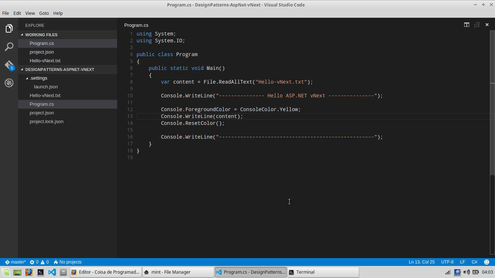
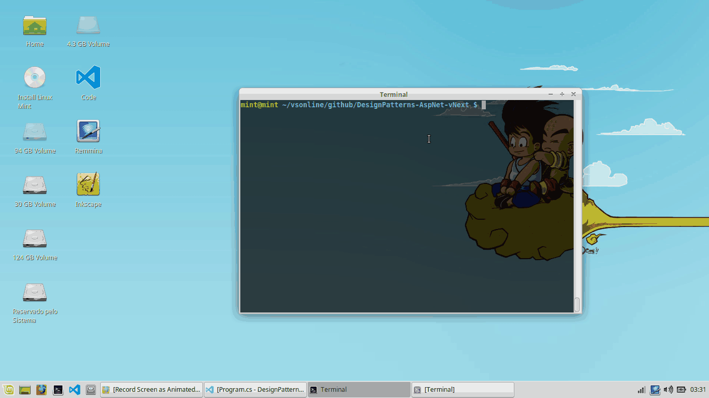

O que é o ASP.NET vNext?
Desde o ano passado a Microsoft vem informando sobre a nova geração do ASP.NET vNext, no mês de julho deste ano, este lançamento impactou em mudanças culturais e tecnologicas.
A versão do ASP.NET vNext agora é OpenSource e você será capaz de publicar suas aplicações onde desejar, além do Windows será compatível com OS X ou Linux.
Novos conceitos foram integrados a esta nova geração, assim como em outras linguagens de programação "Non-Microsoft" (NodeJs, PHP, Python, Ruby, ...) o código é compilado em tempo de execução.
O pacote de compilação é instalado pelo NET Version Manager - DNVM.
Vamos preparar o ambiente ?
Para inicializar a configuração do ambiente, será necessário instalar a versão mais recente do Mono, a biblioteca libvu e o DNVM.
Instalação do Mono (Versão mais recente)
O mono project é uma implementação open source do Microsoft .NET Framework que promove o cross-plataform e suporta desde a versão v1.1 do .NET Framework até a versão 4.5, porém existem algumas limitações veja.
sudo apt-key adv --keyserver keyserver.ubuntu.com --recv-keys 3FA7E0328081BFF6A14DA29AA6A19B38D3D831EF
echo "deb http://download.mono-project.com/repo/debian wheezy main" | sudo tee /etc/apt/sources.list.d/mono-xamarin.list
sudo apt-get update
sudo apt-get install mono-complete
Instalando o libvu
Esta biblioteca é multiplataforma I/O utilizada pelo KestrelHttpServer que será utilizado nos próximos artigos para hospedar nossas aplicações web (selfhost, uhuh)!
sudo apt-get install automake libtool curl
curl -sSL https://github.com/libuv/libuv/archive/v1.4.2.tar.gz | sudo tar zxfv - -C /usr/local/src
cd /usr/local/src/libuv-1.4.2
sudo sh autogen.sh
sudo ./configure
sudo make
sudo make install
sudo rm -rf /usr/local/src/libuv-1.4.2 && cd ~/
sudo ldconfig
Instalando DNVM
sudo apt-get install unzip
curl -sSL https://raw.githubusercontent.com/aspnet/Home/dev/dnvminstall.sh | DNX_BRANCH=dev sh && source ~/.dnx/dnvm/dnvm.sh
Pronto para criar sua primeira aplicação vNext?
Ambiente configurado, vamos criar uma aplicação.
Para codificar existem diversos editores compativeis com o C# Syntax. Esta integração é garantida pelo OminiSharp.
Atualmente estou utilizando o Microsoft Visual Studio Code recomendo!

using System;
using System.IO;
public class Program
{
public static void Main()
{
var content = File.ReadAllText("Hello-vNext.txt");
Console.WriteLine("--------------- Hello ASP.NET vNext ---------------");
Console.ForegroundColor = ConsoleColor.Yellow;
Console.WriteLine(content);
Console.ResetColor();
Console.WriteLine("---------------------------------------------------");
}
}
Ver no GitHub
Rodando a aplicação!
- Entre na pasta do projeto.
Antes de rodar a aplicação recomendo realizar um upgrade nos pacotes utilizando o comando:
dnvm upgrade -u
Digite o código abaixo e veja a execução:
dnx . run
Sempre que iniciar uma nova instância do terminal será necessário executar o comando abaixo, para o reconhecimento dos comandos do dnvm.
source ~/.dnx/dnvm/dnvm.sh

Fim
Bem vindo a nova geração, obrigado pela atenção e até a próxima!